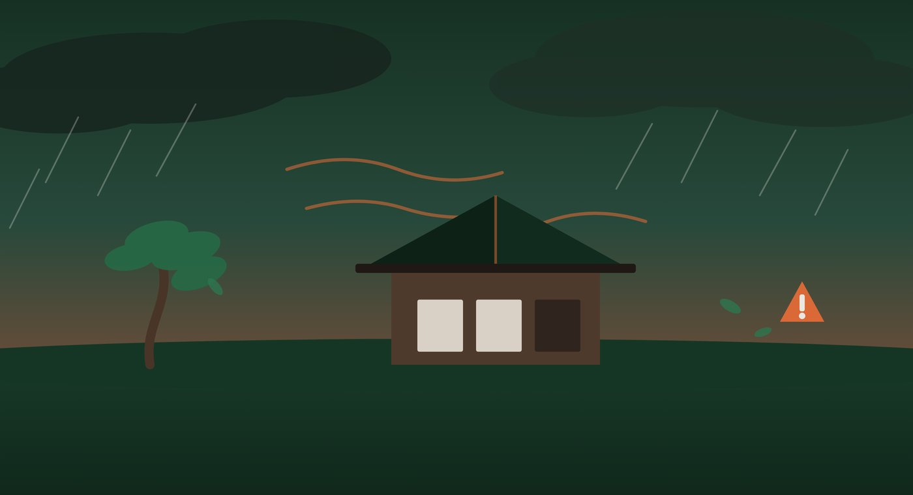

台風シーズンの空き家は、事前の備えの有無で被害の大きさが大きく変わります
鹿児島県は全国でも有数の台風常襲地帯です。毎年のように台風の直撃・接近を受け、住んでいる家でも被害が出ることがあります。ましてや誰も住んでいない空き家は、被害に気づくのが遅れ、深刻化しやすいという特有のリスクを抱えています。
この記事では、台風シーズン前にチェックすべきポイントと、遠方にお住まいのオーナー様でもできる備え、台風後にすべき対応をまとめました。
なぜ空き家は台風被害を受けやすいのか
人が住んでいる家であれば、台風前に雨戸を閉めたり庭木を剪定したりといった備えが自然と行われます。しかし空き家の場合、こうした事前の備えがされないまま台風を迎えてしまうケースがほとんどです。
さらに、被害が出ても発見が遅れるため、雨漏りが天井裏に広がったり、割れた窓から雨水が浸入して床が腐食したりと、被害が時間とともに拡大してしまう点も大きな問題です。
台風シーズン前にチェックすべき箇所
本格的な台風シーズン（7〜9月）を迎える前に、以下のポイントを確認しておきましょう。
| チェック箇所 | 確認内容 |
|---|---|
| 屋根・棟板金 | 瓦のズレ・浮き、棟板金の釘の緩みがないか |
| 雨戸・シャッター | 正常に閉まるか、建て付けが悪くなっていないか |
| 雨どい・排水路 | 落ち葉やゴミが詰まっていないか（浸水の原因に） |
| 庭木・植栽 | 伸びすぎた枝がないか、倒木の危険はないか |
| 塀・フェンス・物置 | ぐらつき・劣化がないか、固定は十分か |
特に雨どいの詰まりは浸水被害に直結しやすいポイントです。空き家では長期間放置されがちなので、優先的に確認することをおすすめします。
遠方オーナーでもできる備え
台風接近前にできること
台風の接近が予想される場合、管理業者に依頼して窓ガラスへの飛散防止フィルムの貼付や養生、敷地内で飛ばされやすい物の固定・屋内への移動を行っておくと安心です。植木鉢や物干し竿など、風で飛ばされやすいものは特に注意が必要です。
日頃からの備え
台風のたびに毎回帰省して対応するのは現実的ではありません。定期管理サービスを利用し、台風シーズン前後に重点的な巡回・点検を組み込んでもらうのが最も現実的な対策です。TAMARIEでは、台風前後の臨時巡回にも対応しています。
- 屋根・雨どい・雨戸の点検（できれば専門業者に依頼）
- 庭木の剪定・飛ばされやすい物の固定
- 火災保険の風災・水災補償の内容を確認しておく
- 管理業者に台風時の緊急連絡・巡回体制を確認しておく
台風が過ぎた後に確認すべきこと
台風通過後は、できるだけ早く物件の状態を確認しましょう。遠方の場合は管理業者に依頼し、写真での状況報告を受けるのが確実です。
- 屋根・外壁の破損、瓦のズレや落下がないか
- 室内の雨漏り・浸水の跡がないか（天井のシミにも注意）
- 塀・フェンス・物置の倒壊や損傷がないか
- 近隣の建物や道路に被害を与えていないか
被害が見つかった場合は、写真を撮って記録し、火災保険会社に連絡しましょう。多くの火災保険には「風災補償」が含まれており、屋根の飛散や雨どいの破損などが補償対象になるケースがあります。ただし、経年劣化とみなされると補償されないこともあるため、日頃の点検記録が保険申請の際に役立ちます。